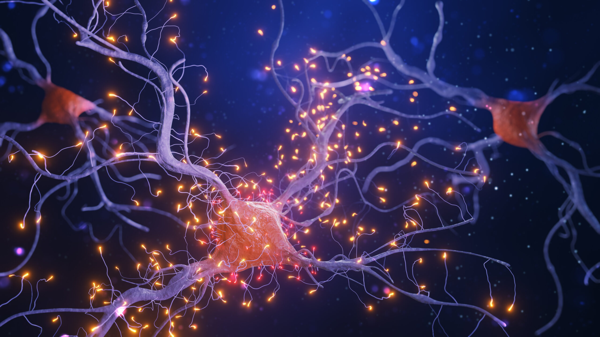

NeuraVis - Krok w przyszłość
Przełomowa technologia czytania fal mózgowych z wykorzystaniem sztucznej inteligencji

Jak działa NeuraVis?
System działa w trzech etapach:
1. Rejestracja danych EEG - czujniki zbierają sygnały z mózgu.
2. Analiza za pomocą AI - algorytmy analizują dane, wykrywając istotne wzorce.
3. Personalizacja - wyniki pomagają tworzyć spersonalizowane terapie.

Korzyści z zastosowania
- Wczesne wykrywanie zaburzeń neurologicznych
- Personalizacja terapii dla pacjentów
- Zwiększenie efektywności rehabilitacji